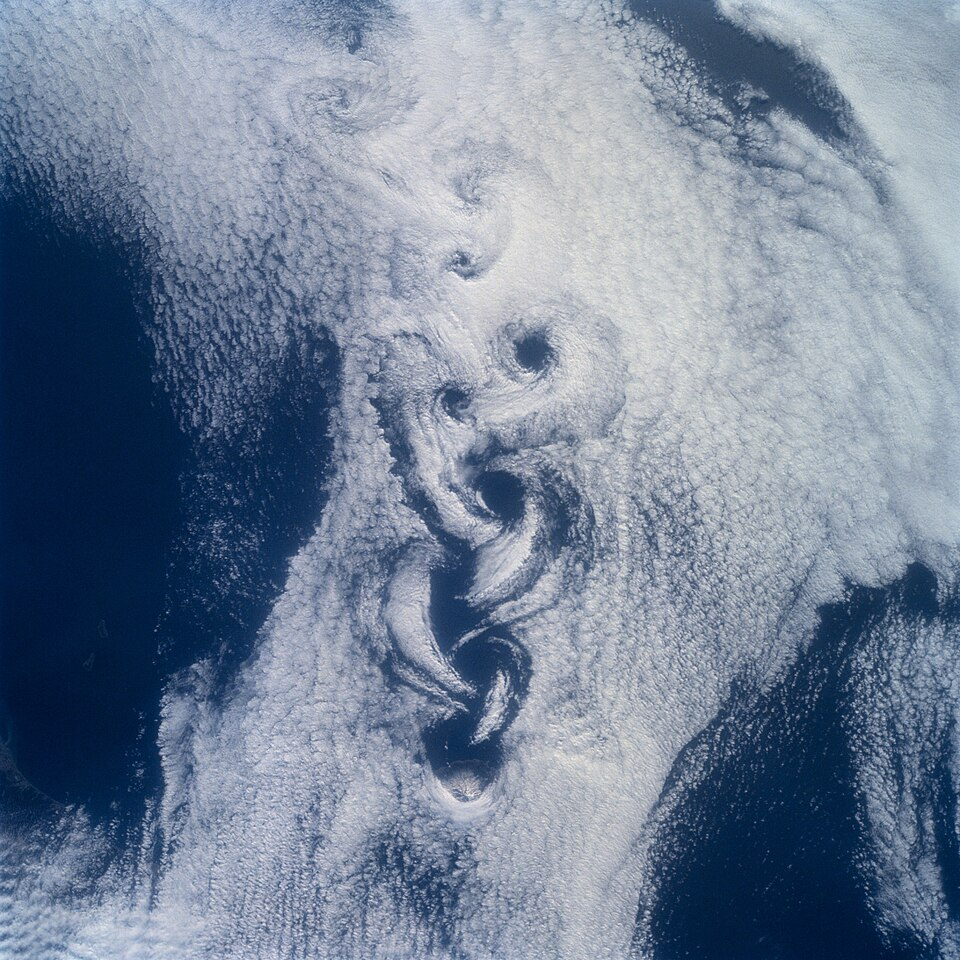

Qué se gana y qué se pierde al hacer de cuenta que un fluido no tiene fricción
Incluso las formas más simples de movimiento de un fluido pueden ser muy complicadas. Por eso, como explica OpenStax, muchas veces se trabaja con fluidos ideales: fluidos con viscosidad despreciable, es decir, sin fricción interna. A veces se agrega otra simplificación, la de un fluido incompresible, cuya densidad es la misma en todas partes [1]. Es un modelo, y como todo modelo gana algo y pierde algo. Lo interesante es que lo que pierde resultó ser, durante más de un siglo, uno de los grandes enigmas de la física.
Sin viscosidad, las cuentas se simplifican muchísimo. El resultado más famoso es la ecuación de Bernoulli: para un fluido incompresible y sin fricción, la suma de la presión y de las energías cinética y potencial por unidad de volumen se mantiene constante a lo largo de una línea de corriente [2]. OpenStax la presenta como una forma cómoda de escribir la conservación de la energía para un fluido incompresible sin fricción [2]. Con ella se explican, por ejemplo, los atomizadores y parte de la sustentación de un ala [2]; tiene su propio artículo, el del teorema de Bernoulli.
El modelo ideal también permite usar herramientas matemáticas muy elegantes, como el flujo potencial, para calcular cómo se reparte la velocidad alrededor de un objeto.
El problema apareció al calcular la fuerza que un fluido ejerce sobre un cuerpo que se mueve a velocidad constante. Para un fluido ideal e incompresible que rodea en forma estacionaria a un cuerpo sólido, el arrastre da cero [3]. Pero cualquiera que sacó la mano por la ventanilla de un auto sabe que el aire empuja.
La historia de esa contradicción la reconstruyeron Grimberg, Pauls y Frisch en 2008. Según su trabajo, Euler estuvo muy cerca de probar que el arrastre se anulaba en 1745; Borda mostró en 1766 que el principio de las «fuerzas vivas», la conservación de la energía, implicaba que el arrastre era nulo; y D'Alembert, después de rechazar al principio esa posibilidad, estableció la paradoja en 1768, aunque solo para cuerpos simétricos de adelante hacia atrás [3]. Una formulación general, para cuerpos de cualquier forma, la dio Saint-Venant en 1846, que señaló que el arrastre nulo podía deberse a no tener en cuenta la viscosidad [3].
Los autores agregan un detalle: como las primeras deducciones no usaban directamente las ecuaciones del fluido ideal, durante mucho tiempo no se reconoció que el problema estaba en la idealización misma, y las dificultades se atribuyeron a la falta de herramientas matemáticas [3]. La idea de viscosidad, señalan, maduró recién en el siglo XIX [3].
El patinador sobre hielo perfecto: un patinador sobre un hielo sin ninguna fricción se deslizaría para siempre sin frenar. El modelo es útil para entender cómo gira o cómo cambia de dirección, pero no sirve para explicar por qué al final se detiene. El fluido ideal es ese hielo perfecto: describe bien muchos movimientos, pero no puede explicar el frenado que produce un fluido real.
Al eliminar la viscosidad se pierde, en primer lugar, la condición de que el fluido no deslice sobre las paredes: en un fluido real, la capa en contacto con una superficie se mueve con ella [4]. Se pierde también la transición entre el flujo ordenado y el turbulento, que según Reynolds depende de la viscosidad: cuanto más viscoso es un fluido, menos propenso es a formar remolinos [5]. Y se pierde todo el mundo de los microorganismos, que viven a números de Reynolds tan bajos que la viscosidad lo domina todo, como describió Purcell [6].

Por eso el fluido ideal funciona bien en algunas situaciones y muy mal en otras. Cuando interesa la fuerza que el fluido hace sobre un objeto, como mostró la paradoja, la viscosidad no se puede ignorar.
La salida llegó a comienzos del siglo XX. Según la biografía de MacTutor, Ludwig Prandtl respondió el problema abierto del flujo con viscosidad muy pequeña introduciendo la capa límite, que él llamaba la capa de fricción sobre las paredes, y presentó el resultado en el Congreso Internacional de Matemáticos de Heidelberg, en agosto de 1904 [7]. La idea es que la viscosidad, aunque sea muy chica, no se puede ignorar en esa capa de fricción pegada a las paredes. Los detalles están en el artículo sobre la capa límite.
El fluido ideal es una de las simplificaciones más útiles de la física, y también una de las más instructivas. Permite escribir la ecuación de Bernoulli y calcular flujos con elegancia, pero predice que un objeto puede moverse en el aire sin ningún arrastre. Entender por qué falla llevó más de un siglo y terminó en una de las ideas centrales de la mecánica de fluidos moderna. La historia de la paradoja tiene su propio artículo: la paradoja de D'Alembert.
Pregunta para la comunidad: Si el fluido ideal predice arrastre nulo, ¿por qué igual se lo usa para diseñar alas de avión? ¿Qué parte del problema resuelve bien y qué parte hay que corregir?